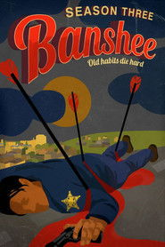
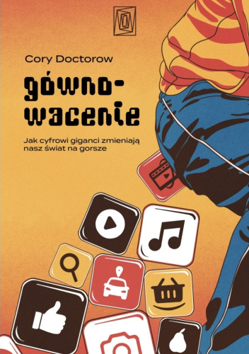
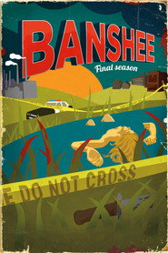

październik 2026
Niebieska ramka: czytam · czerwona: oglądam
PnWtŚrCzPtSbNd
1
2
3
4

5

6
7

8
9
10
11
12
13
14
15
16
17
18
19
20
21
22
23
24
25
26
27
28
29
30
31
W tym miesiącu
- Oglądam Z Archiwum X
- Oglądam Banshee
- Czytam Obietnica dla Zmarłej · sezon 1
- Czytam Gównowacenie. Jak cyfrowi giganci zmieniają nasz świat na gorsze
- Oglądam Banshee